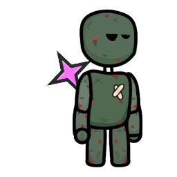

Luck Charm
Adds 2 percentage points to item drop chances on your killing blows.
- Level requirement
- 30
- Class
- All classes
- Slot
- Accessory
- Defense
- 0
- Bonuses
- Luck +2
- Worth
- 200,000
- Sell price
- 60,000
Equipped appearance

Adds 2 percentage points to item drop chances on your killing blows.
